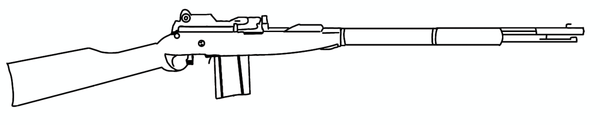
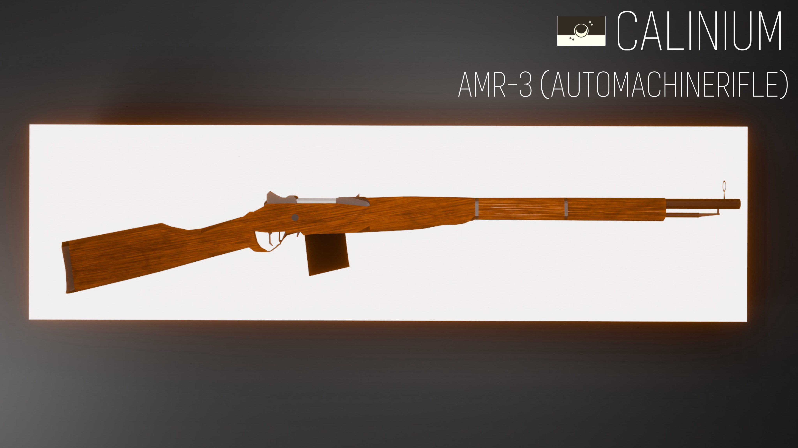
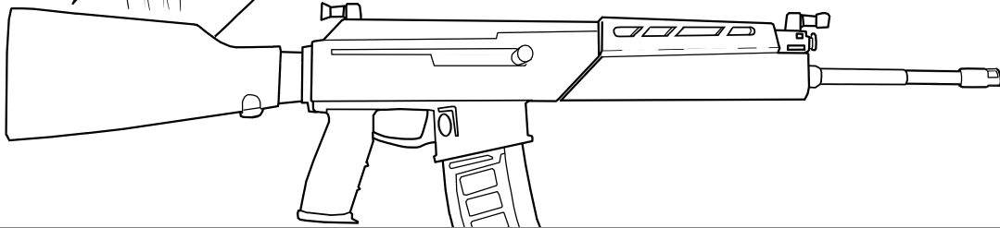
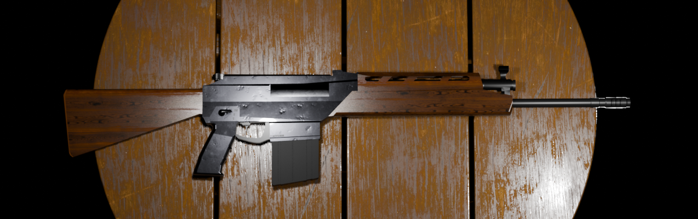
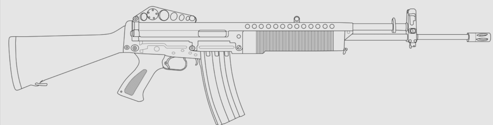
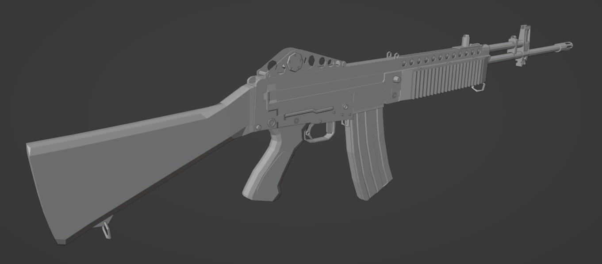

I did not originally want to model guns at all, but one day one of my friends approached me and asked for a favor. He had an idea for a worldbuilding project and wanted me to model a 3D gun for him. Seeing an opportunity to improve, I eventually accepted and asked for a wireframe sketch of his idea. The Blueprint he gave me is below, as well as the finished 3D Model.


You'll notice it looks slightly different, and that's because some aspects of the model were changed during development to make it more practical. Note the very Rigid and sharp edges of the model. The Model is almost entirely flat on it's side, and lacks depth. However for a starter model, this isn't exactly terrible.
Intermediate design
After finishing the first gun, I was quite happy with how it turned out, since I had never made any other model without following a tutorial prior to this. Afterwards, another friend reached out to me when he saw the modeling potential. This other friend also provided his own blueprint, and I got to work. This Gun was called the "RNRAED"


You'll notice that the gun has changed from the blueprint once more in order to keep it practical and realistic. The gun is generally larger and fatter, with the presence of more detailed parts like a firing selector, front iron sight, and a Muzzle brake. But why is the gun fatter? I had just learned to use the "Extrude" tool, which allows me to extend an objects face further inside or farther out, allowing me to add more depth. My past experience from the first model allowed me to get used to modeling more quickly, allowing more time for multiple features.
Sum of Knowledge
Afterwards, when trying to model for other people. I hit a sort of writer's block. I couldn't motivate myself to make guns for a long time. I tried starting new projects, but I didn't go very far. That was until I had a conversation with another modeler, who taught me tricks and techniques such as mirroring, magnet matching vertices, and Boolean modifiers. With this, I would start the most Ambitious Project I have ever attempted. I used a Blueprint I found online and got to work.


Despite not having a texture applied yet, you can see the increased detail to the model compared to my other ones. You can see multiple screws, curves, detailed Iron sights, ribs on the handguard, and just general quality Improvement with the help of the new techniques. It is by no mean finished, since it lacks an ejection port, but it is very close to be done. Through my new learned techniques and the experience from the past two models, I was able to create this.